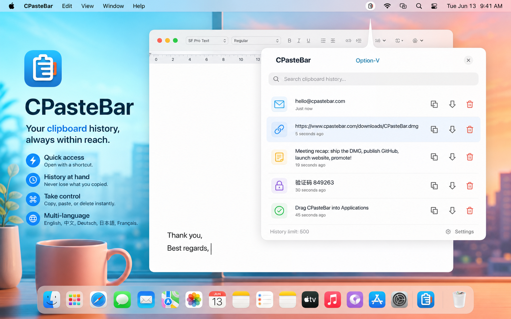
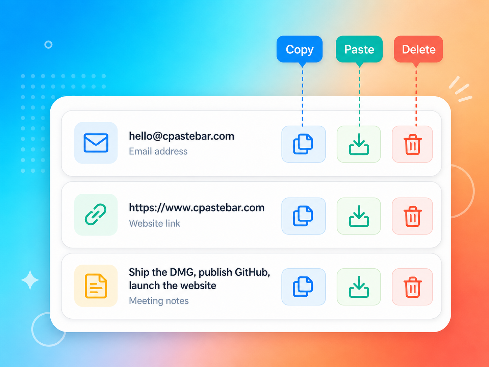

Win+V-style picker
Open a compact clipboard panel near your cursor and scroll through saved snippets.
Clipboard history for macOS
CPasteBar brings a Win+V-style clipboard picker to macOS with quick search-free access, multilingual UI, and a clean menu bar experience.


Open a compact clipboard panel near your cursor and scroll through saved snippets.
Copy, paste, or delete individual history items with clear per-row controls.
Use CPasteBar in English, Chinese, German, Japanese, or French.
Download the DMG, drag CPasteBar into Applications, then grant Accessibility permission for paste automation.
Download for macOSCPasteBar is released under the MIT License so the community can inspect, improve, and share it.